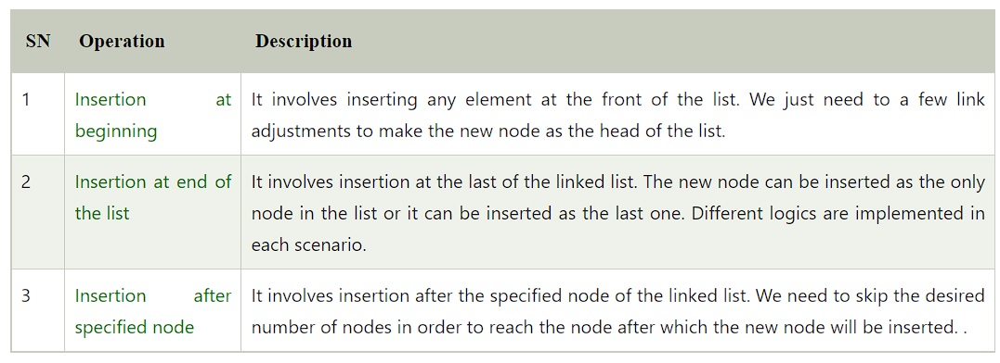
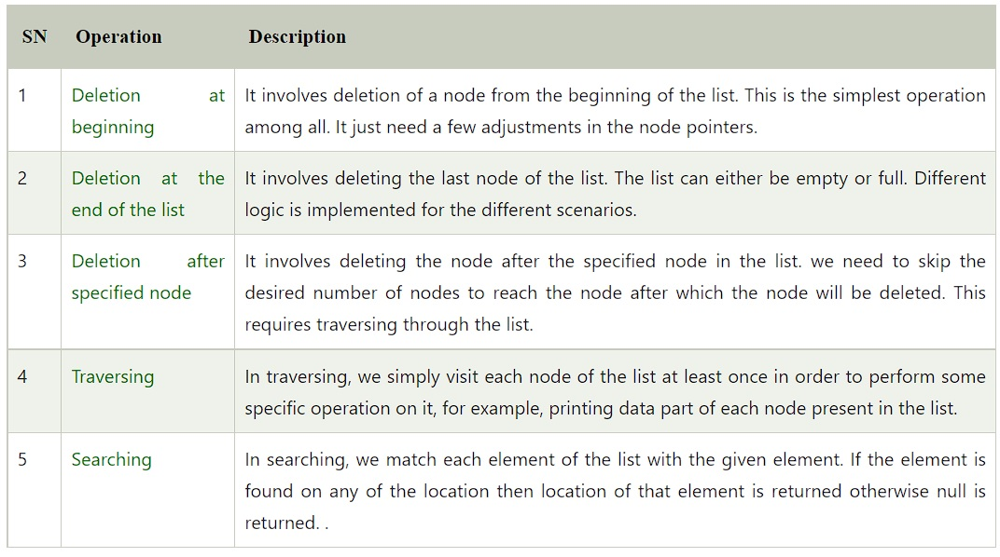

Coursework for Linked Lists
We have covered Arrays in our previous week as part of this course. In this week we shall try to
understand a few limitations of Arrays and how they can be overcome using another data structure
called linked list.
A linked list is a sequence of data structures, which are connected together via links. Linked List
is a sequence of links which contains items. Each link contains a connection to another link. Linked
list is the second most-used data structure after array. The size of the linked list is not fixed,
and data items can be added at any locations in the list. The disadvantage is that to get to a node,
we must traverse to all the way from the first node to the node that we require. The Linked List is
like an array but unlike an array, it is not stored sequentially in the memory.
A linked list is a linear data structure that includes a series of connected nodes. Here, each node
stores the data and the address of the next node. You have to start somewhere, so we give the
address of the first node a special name called HEAD. Also, the last node in the linked list can be
identified because its next portion points to NULL as shown below.

Properties of Linked Lists
- 1. The list is not required to be contiguously present in the memory. The node can reside any where in the memory and linked together to make a list. This achieves optimized utilization of space.
- 2. List size is limited to the memory size and doesn't need to be declared in advance.
- 3. Empty node can not be present in the linked list.
- 4. We can store values of primitive types or objects in the singly linked list.
Representation, Declaration and Initialization of Linked Lists
Let's see how each node of the linked list is represented. Each node consists: a data item and an address of another node. We wrap both the data item and the next node reference in a struct as:
int data;
struct node *next;
};
#include
struct person {
int age;
float weight;
char name[30];
};
int main() {
struct person *ptr;
int i, n;
printf("Enter the number of persons: ");
scanf("%d", &n);
// allocating memory for n numbers of struct person
ptr = (struct person*) malloc(n * sizeof(struct person));
for(i = 0; i < n; ++i) {
printf("Enter first name and age respectively: ");
// To access members of 1st struct person,
// ptr->name and ptr->age is used
// To access members of 2nd struct person,
// (ptr+1)->name and (ptr+1)->age is used
scanf(" %s %d", (ptr+i)->name, &(ptr+i)->age);
}
printf("Displaying Information:\n");
for(i = 0; i < n; ++i)
printf("Name: %s\tAge: %d\n", (ptr+i)->name, (ptr+i)->age);
return 0;
}
Operations of Linked Lists
The insertion into a singly linked list can be performed at different positions. Based on the position of the new node being inserted, the insertion is categorized into the following categories -  The Deletion of a node from a singly linked list can be performed at different positions. Based on the position of the node being deleted, the operation is categorized into the following categories - 
For more information please go through the following links -
You may also like to go through this video tutorial:
Contact School of Computer and Information Sciences, University of Hyderabad and submit an application with your roll number, semester, course id, course name to register for the complete course.